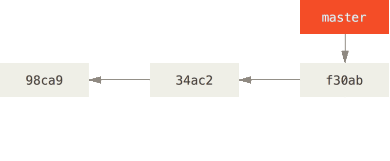
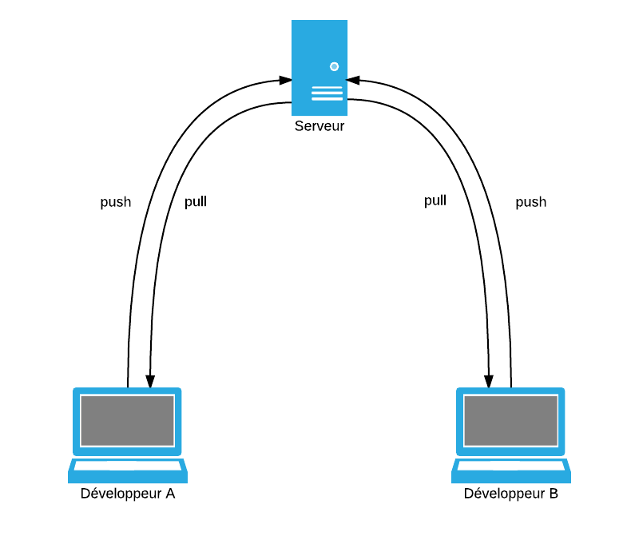
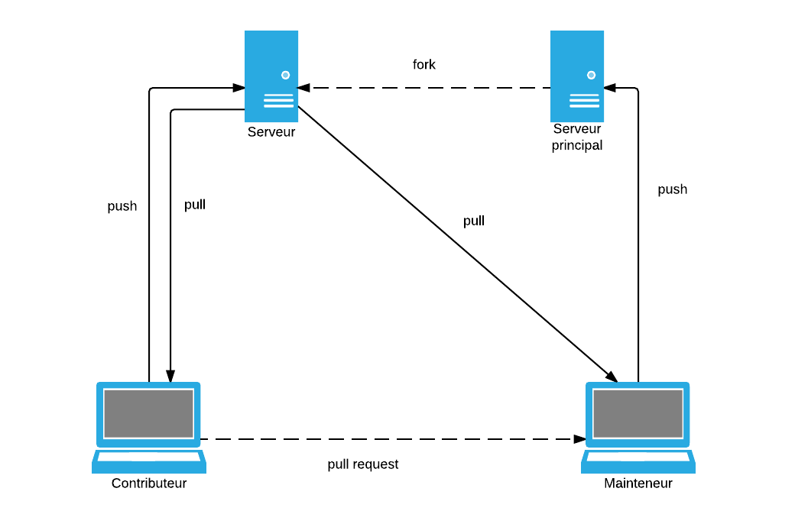

Le versioning avec

Par Alexis Couronne - @skitoo
Présentation rapide
- Développeur depuis 10 ans
- Python et JavaScript
- Actuelle développeur front chez Gandi.net
- Membre actif de l'ARU2L
Qu'est ce que le versioning ?
- Gestion d'un ensemble de fichiers texte
- Historique complet des mofications (ajouts, modifications, suppressions)
- Facilite le travail en équipe
- Gestion des branches de développement
Systèmes centralisés
CVS, Subversion (SVN)...
Avantages
- Simplie la gestion des versions
Inconvénients
- Forte dépendance à une machine (si défaillance)
- Obligation d'avoir accès au réseau pour travailler
Systèmes décentralisés
Git, Mercurial, GNU Arch...
Avantages
- n'est pas dépendant d'une seule machine
- permet de travailler sans être connecté au gestionnaire de version
- actions rapides car réalisées en local
- permet le travail privé pour réaliser des brouillons sans devoir publier ses modifications et gêner les autres contributeurs
- un dépôt de référence peut être mis en place
Inconvénients
- Ensemble de l'historique doit être posséder localement (peut être un avantage)

- Développé par Linus Torvald pour les besoins du noyau Linux
- Naissance en avril 2005
- Devenu leader graçe à la popularité du réseau social Github
Les bases de GIT
Intialiser un dépôt Git
$ git init myproject
$ tree -a myproject
myproject
└── .git
├── branches
├── config
├── description
├── HEAD
├── hooks
│ ├── applypatch-msg.sample
│ ├── commit-msg.sample
│ ├── post-update.sample
│ ├── pre-applypatch.sample
│ ├── pre-commit.sample
│ ├── prepare-commit-msg.sample
│ ├── pre-push.sample
│ ├── pre-rebase.sample
│ └── update.sample
├── info
│ └── exclude
├── objects
│ ├── info
│ └── pack
└── refs
├── heads
└── tags
Cloner un projet existant
$ git clone git://mysuperproject.org/myproject
Les 3 états d'un fichier

Les 3 commandes pour changer l'état d'un fichier
-
Working directory ← Repository
$ git checkout -
Working directory → Staging area
$ git add myfile -
Staging area → Repository
$ git commit
Ajout d'un fichier dans le dépôt
Création d'un fichier README
$ echo "My Super readme file" › README
$ git status
Sur la branche master
Validation initiale
Fichiers non suivis:
(utilisez "git add ‹fichier\›..." pour inclure dans ce qui sera validé)
README
aucune modification ajoutée à la validation mais des fichiers non suivis sont présents (utilisez "git add" pour les suivre)
Ajout du fichier dans la zone de transit
$ git add README
$ git status
Sur la branche master
Validation initiale
Modifications qui seront validées :
(utilisez "git rm --cached ‹fichier\›..." pour désindexer)
nouveau fichier : README
Ajout du fichier dans le dépôt
$ git commit -m "My first commit"
[master (commit racine) 3813afa] My first commit
1 file changed, 1 insertion(+)
create mode 100644 README
$ git status
Sur la branche master
rien à valider, la copie de travail est propre
$ git log
commit 3813afa66a78ec972cb2de3b0b3f2b10c8612bfd
Author: Alexis Couronne ‹alexis@skitoo.net›
Date: Sat Jun 04 13:02:21 2016 +0200
My first commit
Modifier un fichier existant
Modification du fichier README
$ echo 'New super line into README file' ›› README
$ git status
Sur la branche master
Modifications qui ne seront pas validées :
(utilisez "git add ‹fichier\›..." pour mettre à jour ce qui sera validé)
(utilisez "git checkout -- ‹fichier\›..." pour annuler les modifications dans la copie de travail)
modifié : README
aucune modification n'a été ajoutée à la validation (utilisez "git add" ou "git commit -a")
Différence dans le fichier
$ git diff README
diff --git a/README b/README
index 91c4b15..503423f 100644
--- a/README
+++ b/README
@@ -1 +1,2 @@
My Super readme file
+New super line into README file
$ git add README
$ git commit -m "Update README file "
$ git log
commit a32f4f46a364d6c9cbebbdb9f63878050b6be760
Author: Alexis Couronne ‹alexis@skitoo.net›
Date: Sat Jun 04 13:23:30 2016 +0200
Update README file
commit 3813afa66a78ec972cb2de3b0b3f2b10c8612bfd
Author: Alexis Couronne ‹alexis@skitoo.net›
Date: Sat Jun 04 13:02:21 2016 +0200
My first commit
$ git show a32f4f46a364d6c9cbebbdb9f63878050b6be760
commit a32f4f46a364d6c9cbebbdb9f63878050b6be760
Author: Alexis Couronne ‹alexis@skitoo.net›
Date: Sat Jun 04 13:23:30 2016 +0200
Update README file
diff --git a/README b/README
index 91c4b15..503423f 100644
--- a/README
+++ b/README
@@ -1 +1,2 @@
My Super readme file
+New super line into README file
Configuration de Git
Il est possible de configurer git sur plusieurs niveaux :
- .git/config concerne le dépôt (option : --local)
- ~/.gitconfig concerne l'utilisateur (option : --global)
- /etc/gitconfig concerne le système (option : --system)
$ git config --global user.name "Alexis Couronne"
$ git config --global user.email "alexis@skitoo.net"
Les Branches
Qu'est ce qu'une branche ?
- Un pointeur sur un commit
- Branche par défaut : "master"
- Au fur est à mesure, la branche courante se positionne sur le dernier commit réalisé

Source image : https://git-scm.comCréation d'une nouvelle branche
$ git branch testing

Sur quelle branche sommes nous ?

$ git log --oneline --decorate
a32f4f4 (HEAD -› master, testing) Update README file
3813afa My first commit
Changer de branche
$ git checkout testing

Faisons une nouvelle modification
$ echo "Another new line" ›› README
$ git add README
$ git commit -m "Another update for README file"

Revenons sur master
Et faisons de nouvelles modifications
$ git checkout master
$ echo "print('hello')" › hello.py
$ git add hello.py
$ git commit -m "add hello.py file"

$ git log --oneline --decorate --graph --all
* d23583f (HEAD -› master) add hello.py file
| * 98da44c (testing) Another update for README file
|/
* a32f4f4 Update README file
* 3813afa My first commit
La fusion de branches
Comment ça fonctionne ?
- On peut fusionner 2 branches pour combiner les modifications
- La fusion se fait toujours vers la branche courante
- Une fusion s'accompagne d'un message, comme le commit
Utilisation de la commande merge
$ git merge testing
Merge made by the 'recursive' strategy.
README | 1 +
$ git log --oneline --decorate --graph --all
* b7047e2 (HEAD -› master) Merge branch 'testing'
|\
| * 98da44c (testing) Another update for README file
* | d23583f add hello.py file
|/
* a32f4f4 Update README file
* 3813afa My first commit
Gestion des conflits
Revenons en arrière. Avant de fusionner, rajoutons une ligne dans le fichier README (toujours sur master)
$ echo "Made with ‹3 by skitoo" ›› README
$ git add README
$ git commit -m "Update README file"
git log --oneline --decorate --graph --all
* 92d7c7f (HEAD -› master) Update README file
* d23583f add hello.py file
| * 98da44c (testing) Another update for README file
|/
* a32f4f4 Update README file
* 3813afa My first commit
Fusion !!
$ git merge testing
Fusion automatique de README
CONFLIT (contenu) : Conflit de fusion dans README
La fusion automatique a échoué ; réglez les conflits et validez le résultat.
$ git status
Sur la branche master
Vous avez des chemins non fusionnés.
(réglez les conflits puis lancez "git commit")
Chemins non fusionnés :
(utilisez "git add ‹fichier\›..." pour marquer comme résolu)
modifié des deux côtés : README
$ vi README
My Super readme file
New super line into README file
‹‹‹‹‹‹‹ HEAD
Made with ‹3 by skitoo
=======
Another new line
››››››› testing
My Super readme file
New super line into README file
Another new line
Made with ‹3 by skitoo
$ git add README
$ git commit # permet de terminer la fusion
$ git log --oneline --decorate --graph --all
* c4df37b (HEAD -› master) Merge branch 'testing'
|\
| * 98da44c (testing) Another update for README file
* | 92d7c7f Update README file
* | d23583f add hello.py file
|/
* a32f4f4 Update README file
* 3813afa My first commit
Suppression d'une branche
Ma branche testing n'est plus utile, je peux donc la supprimer
$ git branch -D testing
Branche testing supprimée (précédemment 98da44c).
$ git log --oneline --decorate --graph --all
* c4df37b (HEAD -› master) Merge branch 'testing'
|\
| * 98da44c Another update for README file
* | 92d7c7f Update README file
* | d23583f add hello.py file
|/
* a32f4f4 Update README file
* 3813afa My first commit
Dépot distant
Clonage d'un dépôt distant
$ git clone git@github.com:elm-lang/elm-compiler.git
Infos sur les dépôts distants
$ git remote -v
origin git@github.com:elm-lang/elm-compiler.git (fetch)
origin git@github.com:elm-lang/elm-compiler.git (push)
Liste des branches
$ git branch -a
* master
remotes/origin/HEAD -› origin/master
remotes/origin/master
remotes/origin/stable
Ajout d'un dépôt distant
$ git remote add framasoft git@framagit.org:skitoo/elm-compiler.git
$ git remote -v
framasoft git@framagit.org:skitoo/elm-compiler.git (fetch)
framasoft git@framagit.org:skitoo/elm-compiler.git (push)
origin git@github.com:elm-lang/elm-compiler.git (fetch)
origin git@github.com:elm-lang/elm-compiler.git (push)
Envoyer du code sur le dépôt distant
$ git push origin master
Récupérer du code depuis dépôt distant
$ git fetch origin
Récupérer du code depuis dépôt distant puis le fusionner avec le dépôt local
$ git pull origin master
Flow d'un dépôt en accès en écriture à tous les développeurs

Flow d'un dépôt en accès restreint

Fonctionnalités utiles
STASH
Il peut être interdit de changer de branche sans faire un commit. On peut alors "sauvegarder" dans une pile nos modifications courantes "non commitées"
$ git stash
Saved working directory and index state WIP on master: c4df37b Merge branch 'testing'
HEAD est maintenant à c4df37b Merge branch 'testing'
$ git stash list
stash@{0}: WIP on master: c4df37b Merge branch 'testing'
$ git stash pop
Modifier le dernier commit
Il peut être utile de modifier le dernier commit.Exemple : faute de frappe dans un fichier. Pour cela on modifie le fichier concerné. On l'ajoute sur le stage, puis
$ git commit --amend
Historique d'un fichier
La commande blame permet de voir qui a modifié le fichier.
$ git blame README
^3813afa (Alexis Couronne 2016-06-04 13:02:21 +0200 1) My Super readme file
a32f4f46 (Alexis Couronne 2016-06-04 13:23:30 +0200 2) New super line into README file
98da44c2 (Alexis Couronne 2016-06-04 15:37:23 +0200 3) Another new line
92d7c7fb (Alexis Couronne 2016-06-04 16:28:23 +0200 4) Made with ‹3 by skitoo
Ignorer des fichiers automatiquement
Editer un fichier .gitignore à la racine du projet.
*.pyc
*.pyo
node_modules
*.jar
Références
Sites internet
- Site officiel : https://www.git-scm.com
- Des tips sur git : https://github.com/git-tips/tips